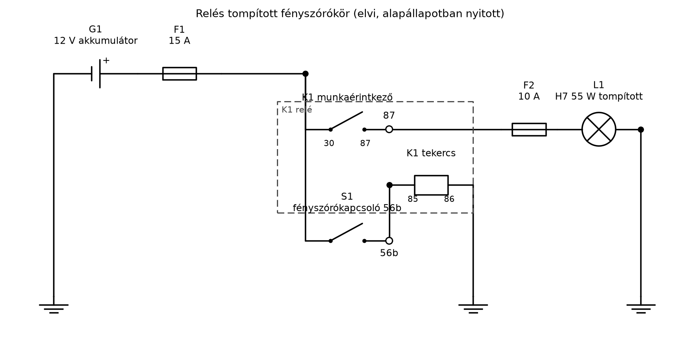

Egy műszaki vizsgára előkészített személyautó a világításvizsgálaton megbukik. Az ügyfél szerint „csak egy izzó volt rossz”, mégis azt kapja, hogy a bal oldali tompított fényszóró vakít, a jobb oldali fénysugár pedig túl alacsonyra világít. A szerelőnek egyszerre kell értenie a fénytechnikai mennyiségeket, a fényszóró fényeloszlását, a kapcsolási rajzot és a hatósági követelményeket. Ez az alfejezet éppen ezt a tudást építi fel: a lámpák nem csupán izzók, hanem típusjóváhagyott, beállított optikai rendszerek.
Képzeljünk el egy halogénes tompított fényszóró metszetét. Az izzószál a parabola alakú reflektor fókuszpontjában helyezkedik el. A reflektor a fényt közel párhuzamos sugárnyalábbá gyűjti, a fényforrás előtti eltérítő lemez pedig levágja a felfelé induló sugarakat. Ha a járművet egy függőleges fal elé állítjuk, a falon egy jellegzetes fény-sötét határ jelenik meg: bal oldalon vízszintes, alacsonyabban futó vonal, középen egy kb. 15°-os ferde lépcső, jobb oldalon pedig magasabb vízszintes szakasz. Jobb oldali forgalmú járműnél a bal szakasz alacsonyabb, hogy a szembejövőt ne vakítsa, a jobb oldali magasabb, hogy a padkát és a közúti táblákat jobban megvilágítsa.
Az ábrán a szürke terület a megvilágított rész, a vastag vonal a fény-sötét határ: a fényszóró 0,70 m-es középmagasságához képest 10 m-en 1,0 %-os lejtés 0,10 m esést, azaz 0,60 m-es határvonalat ad. A HTML-változatban a fényszóró magassága, a falig mért távolság és a lejtés csúszkával állítható, és a kép bal oldali forgalomra tükrözhető.
A fény optikai sugárzás, amelyet az emberi szem érzékel. A járművilágításban három mennyiséget használunk rendszeresen.
Definíció. A fényáram () a fényforrás által kisugárzott, a szem érzékenységével súlyozott látható sugárzási teljesítmény. Mértékegysége a lumen (). Minél nagyobb a fényáram, annál „több fényt” ad a lámpa.
Definíció. A fényerősség () egy adott irányban, kis térszögbe () kisugárzott fényáram. Mértékegysége a kandela (). Képlete differenciális alakban:
Egyenletes eloszlás esetén egyszerűbben . A fényszóró iránykarakterisztikája éppen azt mutatja meg, hogy az egyes irányokban mekkora fényerősséget ad le.
Definíció. A megvilágítás () a felületre érkező fényáram és a felület nagyságának hányadosa. Mértékegysége a lux (), ahol .
Pontszerű fényforrástól távolságban, merőleges beesésnél a megvilágítás a fényerősségből is számítható:
Ha a fénysugár szöget zár be a felület normálisával, akkor a megvilágítás -val csökken: .
Definíció. A színhőmérséklet (, mértékegysége kelvin, ) azt mutatja meg, hogy egy ideális feketesugárzó testnek mekkora hőmérsékletre kellene melegednie ahhoz, hogy a vizsgált fényforrással azonos színű fényt bocsásson ki. Ez nem a lámpa tényleges üzemi hőmérséklete. A nagyobb színhőmérséklet kékebb, hidegebb fényt jelent. A halogén izzók jellemzően kb. 3 200 K, a xenon fényszórók kb. 4 200–4 500 K, a LED-fényszórók pedig gyakran 5 500–6 500 K színhőmérsékletűek (ellenőrizendő: gyártói katalógusadatok).
A járművilágítás kettős célt szolgál: látni (vezető látja az utat) és látszani (a többi közlekedő észleli a járművet). E szerint csoportosíthatjuk a berendezéseket.
| Lámpa | Feladata | Színe / jellegzetesség | Jellemző kapocsjel (DIN 72552 szerint) |
|---|---|---|---|
| Tompított fényszóró | Közeli útfelület megvilágítása vakítás nélkül | fehér, aszimmetrikus fényhatár | 56b |
| Távolsági fényszóró | Távoli útfelület maximális megvilágítása | fehér, szimmetrikus, erős | 56a |
| Helyzetjelző | Jármű kiterjedésének jelzése sötétben, álló helyzetben | első fehér, hátsó piros | 58 |
| Nappali menetfény (DRL) | Nappali észlelhetőség, automatikusan világít | fehér, csökkentett fényerő | gyártói rajz szerint |
| Irányjelző / elakadásjelző | Irányváltási szándék / veszély jelzése | borostyánsárga, villogó | 49a |
| Féklámpa | Lassítás, fékezés jelzése | piros, erősebb | 54 (ellenőrizendő) |
| Első / hátsó ködlámpa | Rossz látási viszonyok közti látás / látszás | fehér vagy sárga / piros | gyártói rajz szerint |
| Tolatólámpa | Hátramenet jelzése, tér megvilágítása | fehér | gyártói rajz szerint |
| Rendszámtábla-világítás | Rendszám olvashatósága | fehér | gyártói rajz szerint |
Az értékek és kapocsjelek tanulási példák (ellenőrizendő: DIN 72552, gyártói áramútrajz és mindenkori előírás).
Az ábra hívószámai a táblázat lámpáit mutatják a járművön; a fényszínt betű jelöli (F fehér, S sárga/borostyán, P piros), a darabszám és a kötelező/megengedett jelleg ellenőrizendő (ECE R48 és a hazai előírás). A HTML-változatban egy lámpára mutatva megjelenik a neve, a fényszíne és a kapocsjele.
Előírás. A világítóberendezések típusjóváhagyását,
fénytechnikai jellemzőit és beépítését az ENSZ-EGB
előírások rögzítik; a járművilágítás beépítésének
alapdokumentuma az ECE R48 típusú előírás
(ellenőrizendő: pontos szám, módosítások). A
fényszórókra, fényforrásokra és a lámpákra külön ECE-előírások
vonatkoznak, például a halogén fényszórókra az R112, a gázkisüléses
fényszórókra az R98, a fényforrásokra az R37 (izzó), R99 (gázkisüléses)
és R128 (LED), az adaptív fényszórórendszerekre az R123
(ellenőrizendő: pontos számok, módosítások). A
lámpabúrán körben E betűt és országkódot, valamint
típusjóváhagyási számot találunk. A hazai forgalomban tartás műszaki
feltételeit a 6/1990. (IV. 12.) KÖHÉM rendelet (a forgalomba helyezés és
forgalomban tartás műszaki feltételeiről), a vizsgálat rendjét az
5/1990. (IV. 12.) KÖHÉM rendelet (a közúti járművek műszaki
megvizsgálásáról) tartalmazza (ellenőrizendő: hatályos
szöveg és módosítások).
A fényszórók áramfelvétele több amper is lehet, ezért a kapcsolót nem terheljük közvetlenül. A kapcsoló a relé tekercsét vezérli, a munkaáramkör pedig a relé érintkezőjén folyik. Az alábbi kapcsolási rajz egy tompított fényszórót működtető relés kör elvi felépítését mutatja.

A kapcsoló S1 a műszerfalon a 30-as állandó
plusz ágat kapcsolja a 56b kimenetre; a relé
85 kapcsán beérkező áram behúzza a K1 relét,
mert a 86 kapocs testre van kötve. A 85/86 polaritása
gyártónként eltér (vö. A fedélzeti hálózat
felépítése, kapocsjelölés és áramútrajz); védődiódás relénél a
polaritás kötött. A relé 30–87
munkaérintkezője ezután zár, és a F2 biztosítékon át áram
folyik a tompított izzóhoz. A kapcsolási rajzon a testpontokat
ground jel, a kapcsolási pontokat a dots
jelöli. Továbbvitt eredmény. Ez a kapcsolási logika az
Egyéb fogyasztók, komfortelektronika és
rádiózavar-szűrés alfejezetben és a Vizsgálati
technológiák: fék, fényszóró, lengéscsillapítás, futómű holtjáték,
ablakok, zaj alfejezetben a világítás diagnosztikájánál tér
vissza.
A tompított fényszóró az alapvető éjszakai világítás. A fény-sötét határ aszimmetrikus, hogy a szembejövő forgalmat ne vakítsa, ugyanakkor a saját oldalon lévő útpadkát még megvilágítsa. A távolsági fényszóró ezzel szemben szimmetrikus, nagy fényerősségű, ezért csak akkor használható, ha nem vakít el más közlekedőt.
A reflektoros fényszóróban a tompított izzószál a fókusz előtt ég, és alatta a takarósapka csak a reflektor felső felét engedi megvilágítani, ezért a visszavert nyaláb lefelé dől. A projektoros fényszóróban az ellipszoid reflektor a fényt a második fókuszba gyűjti, ott áll a kitakaró lemez éle, és a gyűjtőlencse ezt az élet vetíti ki fény-sötét határként. A HTML-változatban a tompított és a távolsági sugármenet között lehet váltani.
A fényforrások fejlődése alapján négy fő típust különböztetünk meg.
Halogén fényszóró. A volfrámszálas izzó búrájában halogén gáz van, ami a lepárolgó volfrámot részben visszaviszi az izzószálra, így megakadályozza a búra feketedését. A H4-izzó egy búrában két izzószálat tartalmaz: a tompított fény számára 55 W, a távolsági fény számára 60 W teljesítményűt, gyártói típustól függően (ellenőrizendő: gyártói adat). A H7-es izzók külön fényszóróba kerülnek, így a tompított és a távolsági fény optikája külön tervezhető.
Xenon (gázkisüléses) fényszóró. A D1S, D2S, D3S, D4S jelű fényforrásokban nincs izzószál; a xenongázban létrejövő ívkisülés fénye világít. A fényforrás üzemi feszültsége nem 12 V, a gyújtáshoz rövid időre több tíz kilovolt (kb. 20–25 kV) szükséges, az üzemi feszültség pedig kb. 85 V váltakozó (négyszög) feszültség (ellenőrizendő: gyártói adat). A xenon fényszóró jellemzően projektoros, nagyobb fényáramú és jobb hatásfokú, mint a halogén. A rendszerhez automatikus fényszóró-tengelyállítás és fényszórómosó is tartozik, mert a nagyobb fényteljesítmény szennyezett búrával jobban szórja a vakító fényt.
Figyelem. A xenon fényszóró gyújtóegysége és vezetékei nagyfeszültség alatt állnak. A xenon lámpát csak feszültségmentesített járművön, a gyártói utasítás szerint szabad szerelni. Járó motorral vagy felkapcsolt fényszóróval a fényforrást kivenni tilos. A nagyfeszültségű részt közönséges multiméterrel mérni nem szabad; a méréshez megfelelő mérési kategóriájú műszer és kiképzés kell (ellenőrizendő: CAT III/IV, gyártói javítási utasítás).
LED-fényszóró. A fénykibocsátó diódák félvezetőkből állnak, nincs izzószáluk. A LED-nek hűtőbordára, tápáram-szabályozó elektronikára és gyakran aktív hűtésre van szüksége. A fényforrás nem cserélhető izzóként, hanem LED-modul vagy komplett fényszóróegység csere jellemző. A LED-fényszóró színhőmérséklete magas, élettartama hosszú, és a fényeloszlás precízen kialakítható.
Mátrix-LED fényszóró. A tompított és távolsági funkció több LED-szegmensből áll. A mátrix-LED vezérlése az első kamera jelei alapján úgy oltja ki az egyes szegmenseket, hogy a megvilágított térrészben a szembejövő vagy az elöl haladó jármű környezete árnyékban maradjon. Így a távolsági fény úgy maradhat bekapcsolva, hogy nem vakít.
Fényszóró-magasságállítás. A fényszóró beállítása a jármű terhelésétől függően változhat, ezért a járművön kézi vagy automatikus szintezés van. A kézi állítás a műszerfali kapcsolóval az állítómotorokat mozgatja. A xenon és LED fényszóróknál automatikus, dinamikus szintezést alkalmaznak, amely a futómű magasságérzékelői alapján gyorsan utánállítja a fénysugarat (ellenőrizendő: gyártói rendszer és ECE-előírás). A beállítási eljárást mindig a gyártói javítási utasításból vesszük; a fényszóró-ellenőrző készüléken a lejtést százalékban adjuk meg.
Az irányjelző a jármű oldalán borostyánsárga, villogó fénnyel jelzi a haladási szándékot. A hagyományos rendszerben az irányváltó-kapcsoló a villogóautomatát köti össze a választott oldal izzóival. A mechanikus vagy elektronikus villogóautomata a bekapcsolást követően megszakítja az áramkört, így hozza létre a villogást. A hagyományos villogóautomata terhelésfüggő, ezért ha egy izzó kiég, a villogási frekvencia megváltozik, általában megnő vagy folyamatosan világít. A LED-irányjelzőknél a vezérlő a fogyasztás változását nem érzékeli, ezért a gyártó LED-kompatibilis villogóautomatát, beépített terhelőellenállást vagy szoftveres beállítást alkalmaz (ellenőrizendő: gyártói rendszer).
Az elakadásjelző (vészvillogó) mindkét oldali irányjelzőt egyidejűleg villogtatja. A kapcsolója a jármű utasteréből, akár a gyújtás nélkül is működik, mert a jármű álló, veszélyhelyzeti jelzése nem függhet a gyújtástól.
A helyzetjelző a jármű helyzetét mutatja sötétben vagy álló helyzetben. Az első helyzetjelző fehér, a hátsó piros, az oldalsó helyzetjelző borostyánsárga lehet. A féklámpa a fékpedál lenyomására kapcsol, piros és a helyzetjelzőnél erősebb. A ködlámpák közül az első ködlámpa fehér vagy sárga, lapos és széles fénysugarával a ködben a közvetlen útfelületet világítja; a hátsó ködlámpa piros, intenzív, csak erősen csökkent látótávolságnál használható. A tolatólámpa hátramenetben fehér fényt ad. A rendszámtábla-világítás a rendszámtáblát egyenletesen, fehér fénnyel világítja meg.
Példa 1 – megvilágítás fényáramból. Egy munkalámpa fényárama , és a fénye egyenletesen felületre jut. A megvilágítás:
Ez megfelel egy jól megvilágított munkahelynek; ellenőrzésképpen az irodai világítás tipikusan 300–500 lx, a műhelyvilágítás ennél nagyobb is lehet.
Példa 2 – pontszerű fényszóró megvilágítása. Egy fényszóró fényerőssége a vizsgált irányban . A mérőfal távolságban van, a beesés merőleges:
Ha a mérőfej szöget zár be a sugárzással, akkor a megvilágítás:
A példa jól mutatja, hogy a fényszórók mérésénél a mérőfej irányítása kritikus.
Példa 3 – áramfelvétel és biztosítékválasztás. Két tompított H7 izzó teljesítménye egyenként 55 W. A rendszer üzemi feszültsége a motorjárás idején . Az összteljesítmény , az áram:
Egy 10 A névleges biztosító elegendő, mert az áramkör tartós árama alatta marad a biztosító névleges értékének. A tényleges biztosítékot mindig a gyártói áramútrajz és a vezeték keresztmetszete alapján választjuk (ellenőrizendő: gyártói adat).
A világítás ellenőrzése a műszaki vizsgára felkészítés része. Az ellenőrzőlista a következőket tartalmazza:
Biztonsági korlát. A feladat tanműhelyi környezetre, oktató felügyeletére és a gyártói javítási utasítás betartására vonatkozik; a megadott értékek tanulási példák.
Egy személyautó a műszaki vizsgán a jobb oldali tompított fényszóró miatt bukik meg. Az ügyfél elmondja, hogy „maga cserélt LED-izzót”, mert az sokkal fehérebb. A szerelő először megnézi a fény-sötét határt a fényszóró-ellenőrzővel. A bal oldali fényszóró határa szabályos, a jobb oldalié magasra vet, és a fénye szórt. A lámpatest belső kialakítása halogén izzóhoz tervezett; a beépített utólagos LED-fényforrásnak nincs típusjóváhagyása ehhez a reflektorhoz. A szerelő visszaszereli a gyári H7-es halogén izzót, megtisztítja a búrát, beállítja a fényszóró-magasságot, majd ismét leméri a fényhatárt. A próbamérés már megfelelő, a jármű a vizsgán átmegy. Tanulság: a fényforrás típusa nem cserélhető tetszőlegesen; a reflektor és a fényforrás együtt alkot jóváhagyott optikai rendszert.
56b?1. feladat (A). Határozd meg a fényáram, a fényerősség és a megvilágítás fogalmát, és add meg mértékegységüket!
2. feladat (A). Két távolsági fényszóró izzója egyenként 60 W. Az üzemi feszültség 13,8 V. Számítsd ki az összes áramfelvételt, és döntsd el, hogy egy 15 A-es biztosító alkalmas-e!
3. feladat (B). A relés fényszórókör rajzán
azonosítsd a 30, 87, 85,
86 kapcsokat! Magyarázd el, miért nem folyik a teljes
izzóáram az S1 fényszórókapcsolón keresztül!
4. feladat (B). Egy fényszóró középpontja 0,70 m magasan van. A gyártói beállítás szerint a fény-sötét határ 10 m-en 1,0%-ot esik (ellenőrizendő: gyártói adat). Milyen magasan legyen a falon a fény-sötét határ? Indokold az aszimmetrikus fénysugár szerepét!
5. feladat (C). Egy relé tekercsénél a 85-ös kapocsra a fényszórókapcsoló kimenete, a 86-osra a test van kötve. Mi történik, ha a két kapcsot felcserélik? Milyen kockázatot jelent ez, ha a relé tekercse védődiódát tartalmaz?
6. feladat (D). Ügyfél panasza: a tompított fény nem világít, a távolsági fény viszont igen. A mérés szerint a K1 relé 30-as kapcsán 12,6 V van, a 87-esen 0 V, a 85-ös és a 86-os kapocs között 0 V, a fényszórókapcsoló 56b kimenetén 12 V. A rajz alapján mi a hiba, és hogyan javítod?
Önellenőrzés – válaszok
1. feladat (A). A fényáram a fényforrás által kisugárzott, a szem érzékenységével súlyozott látható sugárzási teljesítmény, mértékegysége lumen (). A fényerősség az adott irányban, kis térszögbe kisugárzott fényáram, mértékegysége kandela (). A megvilágítás , mértékegysége lux (), ahol .
2. feladat (A). Két izzó teljesítménye . Az áram:
A 15 A biztosító alkalmas, mert a névleges árama nagyobb, mint az áramkör tartós árama. A tényleges választáshoz a gyártói adat és a vezeték keresztmetszete is szükséges.
3. feladat (B). A relé 30 kapcsa a
plusz betáp, a 87 a munkaérintkező kimenet az izzó felé, a
85 és 86 a tekercs kapcsai. Az S1
fényszórókapcsoló a relé tekercsét kapcsolja, amelynek árama kicsi,
néhány tized amper. A nagy izzóáram a 30-as és
87-es érintkezőn folyik, így a kapcsoló nem melegszik, és
az érintkezők élettartama nő.
4. feladat (B). A fényszóró magassága . A 10 m távolságon az 1,0%-os lejtés esése:
A fény-sötét határ magassága a falon:
Az aszimmetrikus fényhatár azért szükséges, mert a jobb oldali forgalomban a bal oldal alacsonyabban fut, a szembejövő védelme érdekében, a jobb oldal magasabban, a padka és a táblák megvilágításához.
5. feladat (C). Egy közönséges, diódát nem tartalmazó relétekercsnél a felcserélés nem változtatja meg a mágneses hatást, a relé behúz. Ha azonban a tekercsen védődióda van, a dióda polaritása a gyártói bekötéshez kötött. A felcserélésnél a dióda nyitóirányba kerülhet a tápfeszültségre, ezáltal rövidzárat kapcsol, és a biztosító vagy a relé meghibásodhat. A bekötéshez mindig a gyártói kapcsolási rajzot kell használni.
6. feladat (D). A tünet alapján a relé nem húz be, mert a 30-as érintkezőn feszültség van, a 87-esen nincs, tehát a munkaérintkező nem zár. A fényszórókapcsoló 56b kimenetén 12 V van, a 85 és 86 kapocs között viszont 0 V: a tekercsen nem esik feszültség. Ez közötti 0 V kétféle hibát jelenthet: a 85-re nem jut tápfeszültség, vagy a 86 testkapcsolata szakadt (ilyenkor mindkét kapocs 12 V-on van, köztük 0 V). Döntő következő mérés a 85 és a test között: ha 0 V, a kapcsoló és a 85 közötti vezeték szakadt; ha 12 V, a 86 és a testpont közötti szakasz hibás. A feladat adataiból ez nem dönthető el, az 56b-n mért 12 V csak azt mutatja, hogy a kapcsoló kimenete rendben van. A megtalált szakadt vezetéket vagy csatlakozót javítjuk. Javítás után a kapcsolási rajz szerinti méréssel ellenőrizzük, hogy a tekercsen megjelenik a feszültség, és a relé 87-es kapcsán is megjelenik a 12 V.
A járművilágítás fénytechnikai alapmennyiségei a fényáram
(,
lumen), a fényerősség
(,
kandela) és a megvilágítás
(,
lux); a színhőmérséklet
(,
kelvin) a fény színét jellemzi. A világítóberendezések a „látni és
látszani” elvet szolgálják. A tompított fényszóró aszimmetrikus
fény-sötét határral dolgozik: jobb oldali forgalomban a jobb oldal
magasabban világít, a bal oldal alacsonyabban, a vakítás elkerülésére. A
fényforrás lehet halogén, xenon, LED vagy mátrix-LED; a xenon rendszer
nagyfeszültségű, csak feszültségmentesítés után szabad szerelni. A
fényszórók fényforrása és a lámpatest együtt típusjóváhagyott rendszer,
ezért utólagos xenon- vagy LED-betét halogén házba nem megengedett. A
fényszóró beállítását fényszóró-ellenőrzővel, a gyártói terhelési
körülmények között végezzük. A relés kapcsolási rajzon a 30
a betáp, 87 a munkaérintkező kimenet,
85/86 a tekercs; a kapcsoló csak a tekercset
vezérli, a nagy áram a relén folyik. Továbbvitt
eredmény. A kapcsolási jelölések és a fényszóró-ellenőrzés
módszere az Egyéb fogyasztók, komfortelektronika és
rádiózavar-szűrés alfejezetben, valamint a Vizsgálati technológiák: fék, fényszóró,
lengéscsillapítás, futómű holtjáték, ablakok, zaj alfejezetben a
világítás hatósági vizsgálatánál tér vissza.
Forrástípusok: ENSZ-EGB előírások (ECE R48, R112, R123 és a lámpákra
vonatkozó előírások; számok, színek, fényerősségek ellenőrizendők), DIN
72552 kapocsjelölések (a 54 féklámpa-jelölés
ellenőrizendő), gyártói javítási utasítások és áramútrajzok, a
forgalomban tartás műszaki feltételeiről szóló 6/1990. (IV. 12.) KÖHÉM
és a műszaki megvizsgálásról szóló 5/1990. (IV. 12.) KÖHÉM rendelet
(ellenőrizendő: hatályos szöveg és módosítások),
valamint fénytani alapismeretek. A színhőmérséklet-értékek,
fényforrás-teljesítmények, a xenon üzemi és gyújtási feszültsége, az
irányjelző frekvenciája és a fényszórólejtés példaértékei gyártói vagy
hatályos ECE-adatok alapján ellenőrizendők.